排名107到排名102，我们真的进步了吗？
原创
Hurrah
煎茶小组
2022-08-11 21:28:52
我们对《2022年全球性别差距报告》中的数据与《2021年全球性别差距报告》进行了对比。
——性别差距报告2022 VS 2021
7月12日，世界经济论坛《2022年全球性别差距报告》发布。世界经济论坛的常务董事萨迪亚·扎希迪（Saadia Zahidi）在前言中提到，“2022 年，在生活成本上升、新冠疫情持续流行、气候紧急情况以及大规模冲突和流离失所等多层次且复杂的危机中，
实现性别平等的进展正在停滞不前
。”“而且这种在实现平等方面的停滞对我们的经济、社会和社区的未来来说是一场灾难。”
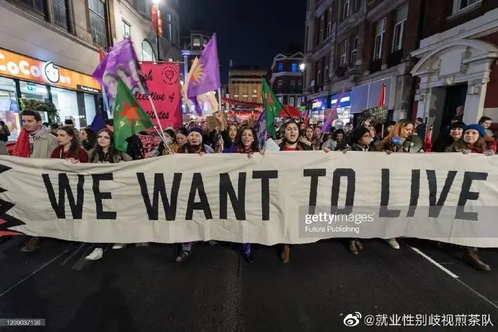
相似的表达也出现在《2021年全球性别差距报告》中。2021年报告中的“Key Findings”部分写到，“初步数据显示卫生紧急事件以及其所导致的经济下行状况对女性产生了更大影响，导致
部分已缩小的性别差距再一次扩大
。”近几年的性别平等进程似乎并不那么顺利。
我们对《2022年全球性别差距报告》中的数据与《2021年全球性别差距报告》进行了对比，包括总结果情况对比，以及中国情况的对比两部分。
一、两年《报告》结果总体情况对比
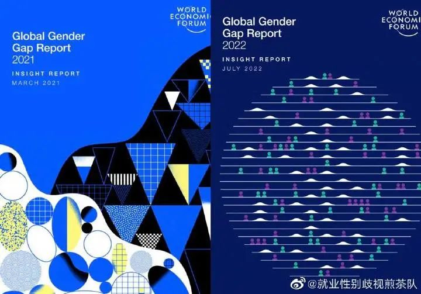
涵盖的国家数量
：
2022年的报告覆盖了146个国家，2021年覆盖156个国家，涵盖国家数量有所减少。
实现性别平等所需时间
：
2021年各项数据显示实现性别平等还需136年，2022年各项数据显示实现性别平等还需132年，但是这减少的四年并不能弥补2022—2021年间的代际损失：根据2020年的趋势，性别差距可在100年内被消除（即实现性别平等需要100年）。
排名前十的国家
：
2022年报告显示：“尽管还没有一个国家实现完全的性别平等，
但排名前十的经济体至少已经消除了80%的性别差距
。其中冰岛（90.8%）在全球排名第一，且仍然是唯一一个消除了90%以上性别差距的经济体。其他斯堪的纳维亚国家，如芬兰（86%，第2位）、挪威（84.5%，第3位）和瑞典（82.2%，第5位），都在前5位；其他欧洲国家如爱尔兰（80.4%）和德国（80.1%）分别在第9和第10位。撒哈拉以南非洲国家卢旺达（81.1%，第6位）和纳米比亚（80.7%，第8位），以及一个拉丁美洲国家尼加拉瓜（81%，第7位）和一个东亚和太平洋国家新西兰（84.1%，第4位），也都在前10名中占有一席之地。尼加拉瓜和德国是2022年新进入前十名的国家，而立陶宛（79.9%，第11名）和瑞士（79.5%，第13名）今年则退出了前十名。”
报告中写到：
“按照目前的进展速度，需要155年才能消除政治赋权的性别差距，151年才能消除经济参与和机会的性别差距，22年才能消除受教育程度的性别差距。消除健康和生存的性别差距的时间仍未确定，因为其实现平等的进展已经停滞
。”
2021年报告中前十名的国家如图所示：
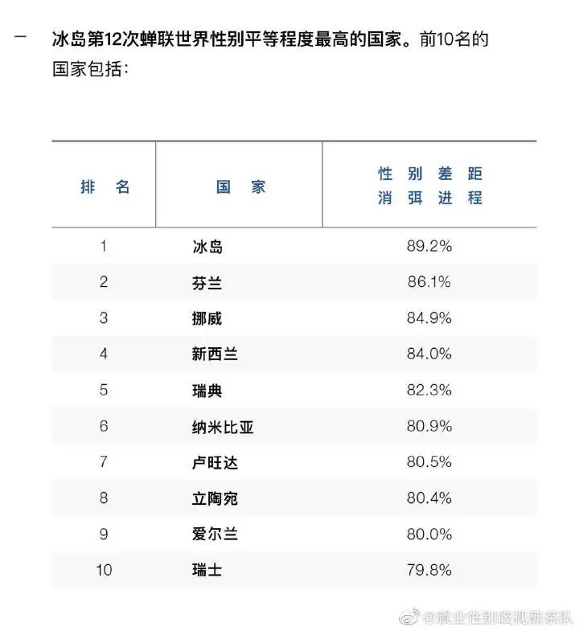
全球各地区消除性别差距的比例和实现性别平等的时长排名：
2021年度：
西欧
仍然是在性别平等方面进展最大的地区（77.6%），而且今年还在进一步发展。北美洲是第二大进展地区（76.4%），今年也在持续进步。其次是拉丁美洲和加勒比地区（71.2%）以及东欧和中亚地区（71.1%）。东亚和太平洋地区再低几个小数点（68.9%）。中东和北非地区仍然是性别差距最大的地区（60.9%）。
实现性别平等的时长：
西欧：52.1年
北美：61.5年
拉丁美洲和加勒比地区：68.9年
撒哈拉以南非洲:121.7年
东欧和中亚：134.7年
中东和北非：142.4年
东亚和太平洋地区：165.1年
南亚：195.4年
2022年度：
北美洲
在所有地区中处于领先地位，已经消除了76.9%的性别差距。紧随其后的是欧洲，它已经消除了76.6%的差距。排名第三的是拉丁美洲和加勒比地区，消除了其72.6%的性别差距。中亚和东亚及太平洋地区处于中间位置，分别消除了69.1%和69%的差距。撒哈拉以南非洲排在第六位，为67.9%。落后撒哈拉以南非洲四个百分点的是中东和北非，消除了63.4%的差距。南亚为最后一名，在2022年消除了62.4%的性别差距。
实现性别平等的时长：
北美：59-62年
欧洲：60年
拉丁美洲和加勒比地区：67年
中亚：152年
东亚及太平洋地区：168年
撒哈拉以南非洲：98年
中东和北非：115年
南亚：197年
报告显示，东亚及太平洋地区缩小的性别差距从2021年的68.9%上升到2022年的69%，但是不可忽视的一个问题是，这个地区内各个国家在消除性别差距上的进展有较大不同。
二、中国相关数据和排名
中国属于东亚及太平洋地区，下面我们着重关注一下去年和今年中国各项数据和排名的变化。
全球总体情况：
报告对比了2021年和2022年所涵盖的145个国家的调查结果，数据显示，总体性别平等得分从67.9%上升到68.1%。经济参与和机会分指数也从58.7%上升到60.3%，健康和生存分指数从95.7%上升到95.8%。教育程度分指数从95.2%下降到94.4%。而政治赋权分指数保持不变，为22%。
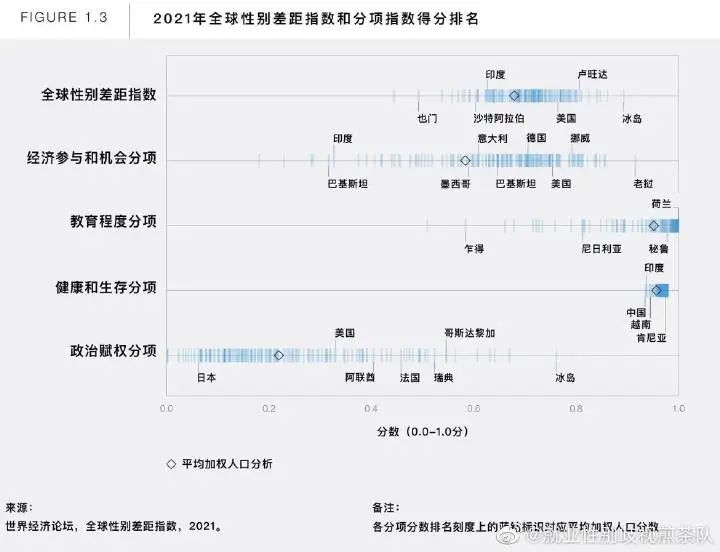
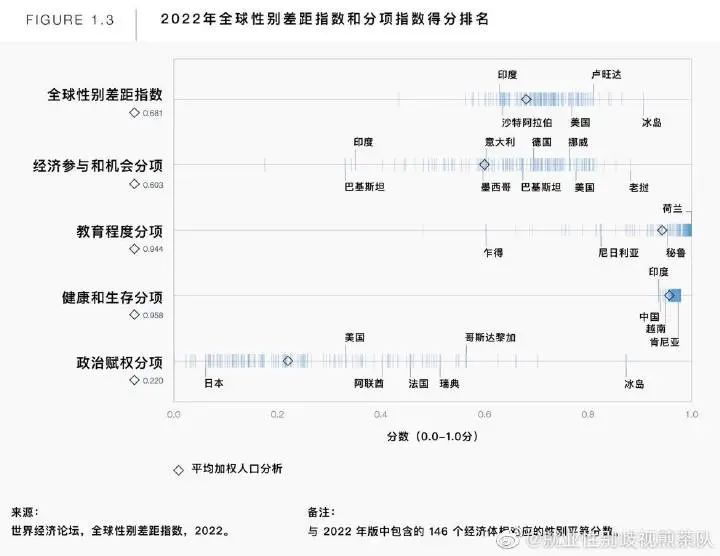
2021年中国各项指标得分：
2021年，在156个国家中，中国总排名107，分数为0.682。在经济参与和机会这一指标中，中国排名第69，分数为0.701。在受教育程度指标中，中国排名103，分数为0.973。
在健康与生存指标中，中国倒数第一
，156名，分数为0.935。在政治赋权指标中，中国排名118，分数为0.118。
但是值得注意的是，
2021和2022年的数据均显示，在健康和生存分指数中，中国的得分一直远低于平均值。
2021性别差距报告中指出，在中国，每出生一名男性，就有0.88名女性出生。
由于有性别偏见的产前性别选择做法，在全世界每年因性别歧视而导致的120万至150万消失女婴中，中国和印度共占了90%至95%。
此外，
中国、印度和巴基斯坦的女性死亡率过高（5岁以下），这与忽视和有性别偏见的产后性别选择做法有关。
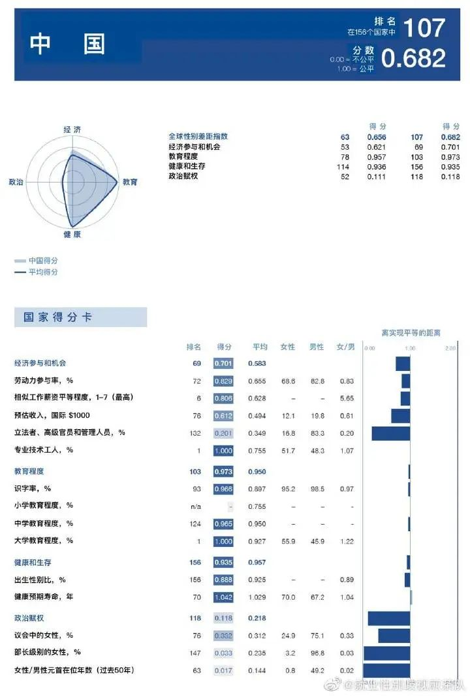
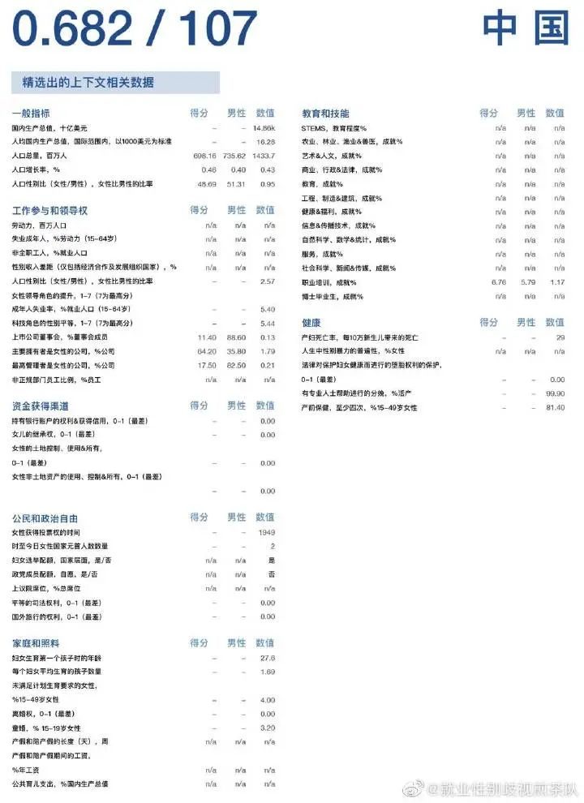
2022年中国各项指标得分：
2022报告中指出，在全球范围内，整体教育水平提高了，但也必须更加关注公平的入学机会。
在中等教育的入学率方面，出现了16个国家性别差距超过10个百分点的情况
。其中13个在撒哈拉以南非洲，2个在南亚（巴基斯坦和阿富汗），
1个在东亚和太平洋地区（中国）
。
同时，在健康和生存方面，141个国家已经消除了至少95%的性别差距，但没有国家在2022年实现平等。
性别差距超过5%的5个国家是卡塔尔、巴基斯坦、阿赛拜疆、中国和印度。
2022年，在146个国家中，中国总排名为102，分数为0.682。在经济参与和机会这一指标中，中国排名第37，分数为0.741。在受教育程度指标中，中国排名120，分数为0.936。
在健康与生存指标中，中国倒数第二
，145名，分数为0.940。
在政治赋权指标中，中国排名120
，分数为0.113。
在经济参与和机会方面，女性和男性的劳动力参与都有所下降，因此性别平等差距保持稳定。第二个改善的领域是健康和生存，出生时的估计性别比
略有
增加（+0.006）。在教育方面，中国的中等教育入学率的平均分数较低。
在政治赋权方面，分数的下跌（-0.006）来自于在过去的50年里，妇女在行政级别的领导层中份额的不断减少
。此外，在蒙古、中国和柬埔寨等七个国家，
同工同酬水平被认为低于2021年
。
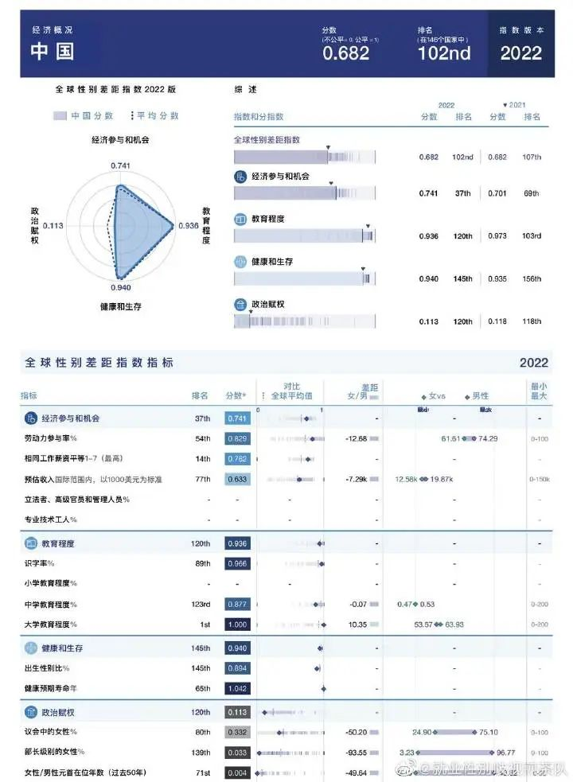
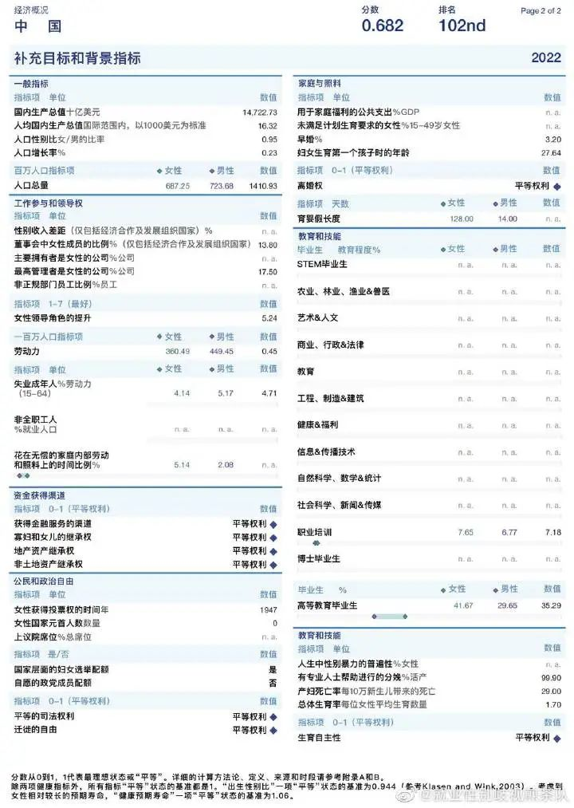
中国近两年在东亚和太平洋地区的排名：
2021年：
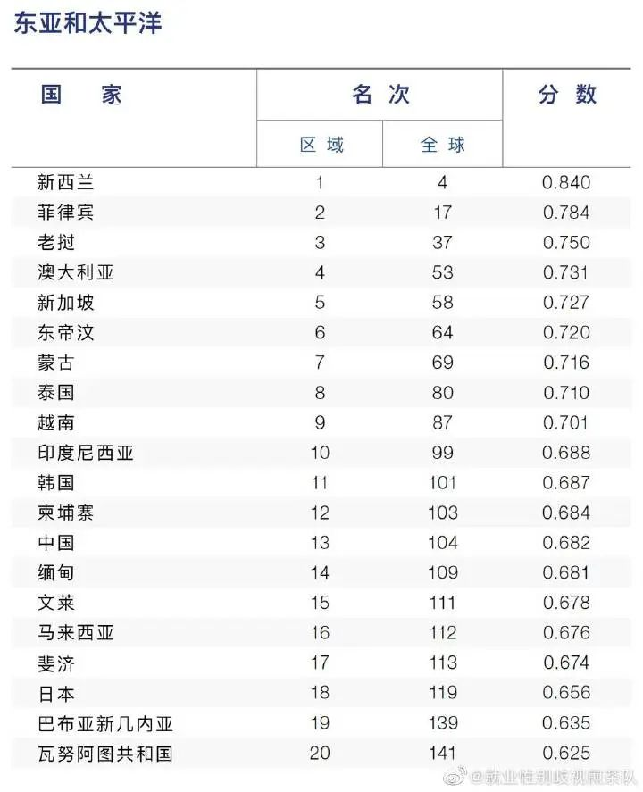
2022年：
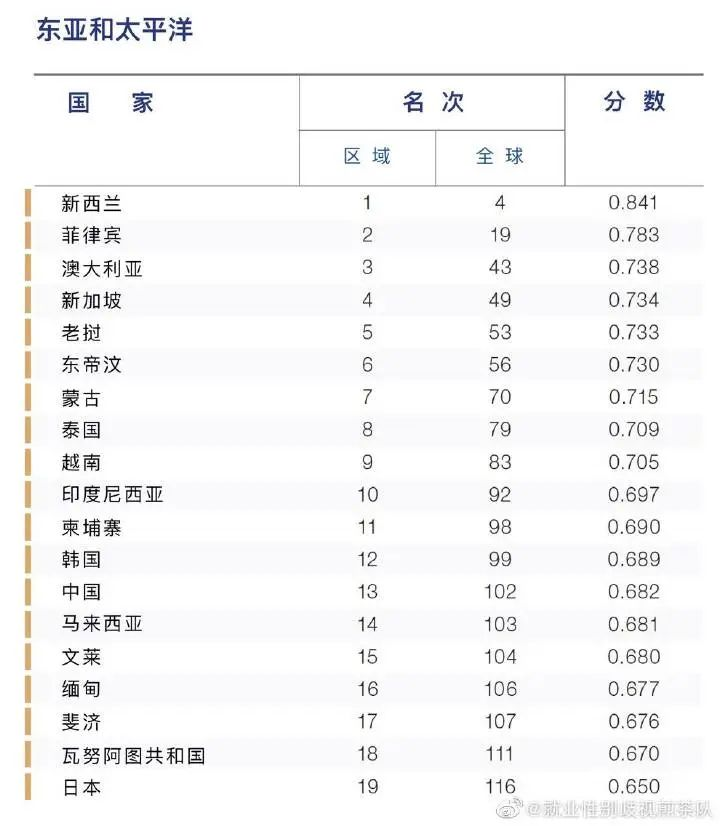
三、正在出现的危机
在2022年性别差距报告中，劳动力中的性别差距被视为一场正在出现的危机
。劳动力中的性别差距是受到许多因素的驱动和影响的，包括长期存在的结构性障碍、社会经济和技术转型以及经济冲击。
1、劳动力市场复苏中的性别差距：
自2009年以来，
全球劳动力参与中的性别平等一直在缓慢恶化
。这一趋势在2020年加剧了，表现为性别平等得分连续两年急剧下降。因此，
到2022年，劳动力中的性别平等比率为62.9%，为有史以来以来的最低水平
。
在仍身处劳动力市场的人员中，妇女的失业率有所上升，而且一直在上涨
。
2、护理工作中的性别差距：
由于新冠疫情影响，儿童保育机构和学校关闭，妇女承担了大量护理工作——这种模式在疫情前就已经存在。根据对33个国家2019年的数据分析，男性花在无偿工作上的时间占总工作时间的19%，而女性则为55%。
随着育儿成本的上升，女性很可能被强迫承担这种无偿劳动。
3、行业领导层的性别差距：
女性担任领导职位的比例稳步上升，从2016年的33.3%上升到2022年的36.9%。在22个国家的数据调查显现出女性在2022年领导位置中的表现：只有部分行业的领导层接近性别平等，如非政府和会员组织（47%）、教育（46%）及个人服务和福利（45%）。在该范围的另一端是能源（20%）、制造业（19%）和基础设施（16%）。尽管随着时间的推移，女性在领导层中的比例一直在增加，但
各行业聘用女性的比例并不相同
。平均而言，
在女性比例已经很高的行业，会有更多的女性被聘担任领导
。
4、政治代表中的性别差距：
在政治领导层中有更多的女性，往往会产生强大的榜样效应，并且做决策时能代表更多人口
。全球性别差距指数的数据显示了女性在公职领导层的进展。在全球所有女性国家元首中，任职时间最长的分别是德国16.1年，冰岛16年，多米尼加14.9年，爱尔兰14年。2006年至2022年，女性担任部长职位的平均比例几乎翻了一番，从9.9%上升到16.1%。同样，在全球范围内，女性在议会中的平均比例从14.9%上升到22.9%。
5、财富积累方面的性别差距：
如果按一生计算，倾斜的劳动市场对女性财富积累有巨大影响。此外，对财富积累资源的不平等获取和控制—如银行、投资、继承和财产—可能导致财富鸿沟。
数据显示，在39个国家的财富平等方面，
妇女在财富积累方面处于不利地位。
导致这种基于性别的财富不平等的最突出因素是薪酬上的性别差距、不平等的职业发展轨迹、金融知识方面的性别差距以及生活中的事件。对于一线业务角色，总体性别贫富差距为
11%
；对于专业和技术类型的角色，性别贫富差距增加了近两倍，达到
31%
；对于高级专家和领导角色，这一比例进一步扩大到
38%
。
6、在终身学习和技能优先次序方面的性别差距：
与男性相比，女性在教育、健康和福利学科中的比例过高，而在STEM领域的比例不足。性别差距在这两个领域最为普遍。考虑到所有领域的毕业生，信息和通信技术(ICT)领域的女性毕业生比例为1.7%，而男性毕业生比例为8.2%。在工程和制造业领域，男性比例为24.6%，女性为6.6%。
尽管传统教育中学位选择一直且仍将继续受到性别分工的影响，但今年的相关数据显示，在网上学习、重学和优化技能的女性数量比以往任何时候都多。此外，在线学习方面的性别差距要远远小于传统教育方面。例如，在信息和通信技术方面，2019年至2021年期间，在线培训中的性别平等程度有所提高。然而，入学行为表明，男性和女性的技能偏好继续受到传统模式分工的影响，造成了男性和女性在技能方面都存在性别差距。
7、压力水平上的性别差距：
根据相关数据，报告发现，
2021年至2022年，女性的压力比男性高4%
。
综上，
性别差距报告的意义在于通过这些数据来发现国家是否在性别平等方面做出了努力，是否把性别平等当做一个重要议题来看待，并通过相关数据，发现亟待改善的方面，最终用相关政策和制度解决相关问题
。迄今为止，没有国家实现性别平等，每个国家都应该重视女性的困境和不平等现象。实现性别平等不仅需要国家的努力，也需要人们的努力，摒弃糟粕思想，树立性别平等和公平意识。实现性别平等不是比烂，而是向好。性别平等也不是一个空口的诺言，而是需要各个领域人民做出实实在在努力的目标。
（来源：世界经济论坛；翻译：乔一、Karen；图片制作：哇哈）
发布于 上海